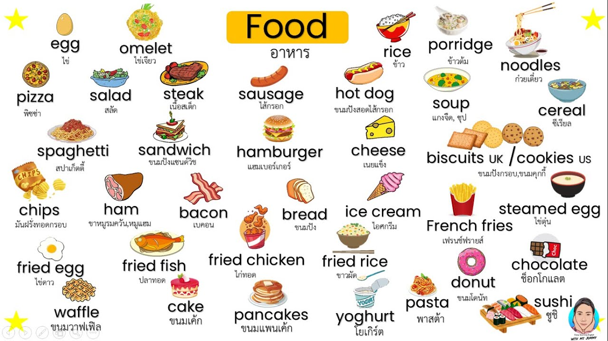

คำศัพท์ Vocabulary

รายวิชาภาษาอังกฤษมุ่งศึกษาและพัฒนาทักษะการใช้ภาษาอังกฤษทั้งด้านการฟัง การพูด การอ่าน และการเขียน รวมถึงการเรียนรู้คำศัพท์ ไวยากรณ์ และการสื่อสารในสถานการณ์ต่าง ๆ เพื่อให้สามารถนำภาษาอังกฤษไปใช้ในชีวิตประจำวัน การศึกษา และการทำงานได้อย่างถูกต้องและเหมาะสม
คำศัพท์ (Vocabulary) — ศึกษาคำศัพท์ ความหมาย และการนำไปใช้ *คำศัพท์ในชีวิตประจำวัน * คำศัพท์ทางการเรียน * Phrasal Verbs * Synonyms & Antonyms หรือ Noun = คำนาม เช่น book, cat Verb = คำกริยา เช่น eat, run Adjective = คำขยายคำนาม เช่น good, big Adverb = คำขยายกริยา เช่น slowly, quickly Pronoun = คำสรรพนาม เช่น I, you, he, they Preposition = คำบุพบท เช่น in, on, at